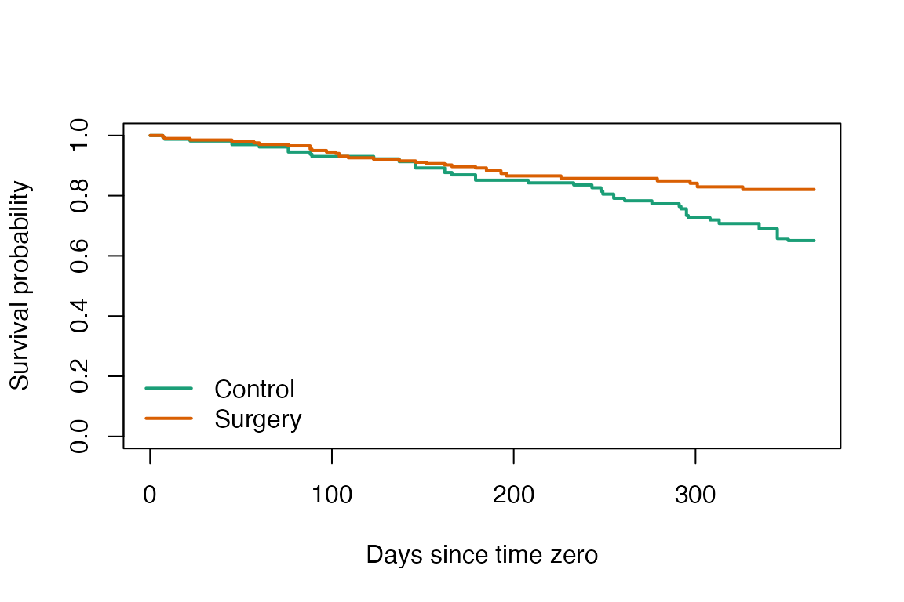

An Overview of the clonecensorweighting Package for R
First
Author
Second
Author
Affiliation
One
Affiliation
Two
Affiliation One Affiliation Two
2026-07-27
Source:vignettes/clonecensorweighting_hw.Rmd
clonecensorweighting_hw.RmdIntroduction
clonecensorweighting implements the
clone-censor-weight (CCW) procedure for emulating a target
trial from observational time-to-event data.
Suppose we want to know whether surgery improves survival in lung cancer patients. Naively comparing those who had surgery against those who did not can be badly misleading. A central culprit is immortal time bias: to be counted in the “surgery” group, a patient must first survive long enough to receive surgery, and that guaranteed survival time is then credited to the surgery group as though it were a benefit of the operation.
CCW is the standard target-trial-emulation remedy for this bias, and its name traces the three steps it takes:
- Clone – each patient is duplicated into every treatment strategy being compared, so that at the start of follow-up every clone is compatible with the strategy it is assigned to.
- Censor – a clone is censored the moment the patient’s observed history stops being consistent with the strategy that clone represents.
- Weight – inverse-probability-of-censoring weights undo the selection bias introduced by that artificial censoring.
The package exposes these steps as a small set of composable functions: they clone a subject-level dataset across strategies, apply the artificial censoring each strategy implies, expand the result into the person-time format that an inverse-probability-of-censoring weighted (IPCW) analysis requires, and fit the weighted per-protocol effect.
The rest of this document is organised as follows. Section 2 reviews target trial emulation. Section 3 works through the method on a real dataset, introducing notation where it is needed and presenting each of the three ideas – cloning, artificial censoring, and IPC weighting – with its rationale and immediately in code, and then estimating the weighted per-protocol effect. Readers who instead want a step-by-step account of building the analysis dataset may prefer the companion “Getting started” vignette.
We assume familiarity with the basic ideas of target trial emulation and inverse-probability weighting. The target-trial framework we emulate is set out by Hernán and Robins [2016] and Hernán, Wang and Leaf [2022]; the use of marginal structural models and IPC weighting to adjust for time-varying selection goes back to Hernán, Brumback and Robins [2000]. Maringe et al. [2020] discuss trial emulation specifically as a remedy for immortal-time bias, and Gaber et al. [2024] give a practical account of implementing clone-censor-weight with stabilized IPCW, which the implementation here follows.
Target trial emulation
The problem it solves
A randomized controlled trial (RCT) can directly compare “following strategy A to the end” versus “following strategy B to the end.” The difficulty with observational data is that no such assignment exists. People are not split into A/B at baseline; over time they begin, switch, or stop treatments according to their evolving health.
The hardest case is when the strategy is defined by something that happens in the future, not at baseline. Consider the strategy “receive surgery within 6 months of diagnosis.” At diagnosis (baseline) we cannot know whether a person will go on to have surgery within 6 months. If we split people at baseline into “surgery” versus “no surgery,” anyone who dies before surgery is automatically classified into the no-surgery arm, producing immortal time bias.
Hernán and Robins [2016] proposed a simple remedy: specify the RCT you would ideally run (the target trial), then emulate that trial using observational data. A target trial is specified through seven components. Table 1 maps those components onto this vignette’s running example (surgery within 6 months of diagnosis).
| Target trial component | Definition in this example |
|---|---|
| 1. Eligibility | Patients alive at diagnosis and not yet operated on |
| 2. Treatment strategies | (A) surgery within 6 months / (B) no surgery within 6 months |
| 3. Assignment | No assignment in observational data replaced by cloning |
| 4. Follow-up | From baseline (diagnosis) to death or end of observation |
| 5. Outcome | Overall survival |
| 6. Causal contrast | Per-protocol effect (effect of following the strategy to the end) |
| 7. Analysis | Artificial censoring + IPCW, then weighted survival analysis |
Data
The clonecensorweighting package is concerned with the
causal analysis of time-to-event outcomes. The bundled
lungcancer dataset contains 200 simulated lung cancer
patients followed for up to one year after diagnosis; 106 received
surgery within six months and 48 died during follow-up.
id surgery timetosurgery death sex charlson perf stage emergency fup_obs
1 P5958 0 NA 0 2 1 2 2 1 365.24
2 P3075 0 NA 0 2 1 0 2 0 365.24
3 P1410 0 NA 0 1 1 2 1 0 365.24
4 P4957 0 NA 0 2 0 1 1 0 365.24
5 P7340 0 NA 1 1 0 2 2 1 123.00
6 P1917 0 NA 0 2 0 0 1 0 365.24
age deprivation
1 79.57290 0.42
2 82.91855 0.07
3 84.03011 0.22
4 78.34634 0.12
5 83.63860 0.40
6 82.26147 0.03The variables used below are the patient identifier id,
the observed treatment surgery
(1/0), the time to surgery
timetosurgery (NA if never operated on), the
outcome death (1/0), the observed
follow-up fup_obs, and the covariates age and
sex.
Reading your own data
The example uses the bundled lungcancer data, but the
same workflow runs on any subject-level dataset that provides, at a
minimum:
- an identifier column for each patient;
- a binary treatment column, coded
0/1; - a time-to-treatment column (numeric,
NAfor the untreated); - a binary outcome column, coded
0/1; - a numeric follow-up-time column.
The column names are up to you: you pass them to the
relevant function arguments (the treatment, outcome and follow-up names
to the policy and censoring helpers; the identifier to
create_final_data(); any covariates to
estimate_censoring()), as we do in Section 3. Any
additional columns are carried along and can serve as covariates.
read_trial_data() is a small convenience wrapper for
reading such data from a CSV file into a tibble. It imposes no
particular column structure; it simply reads the file:
my_data <- read_trial_data("path/to/your-data.csv")The companion “Getting started” vignette walks through preparing and checking an input dataset in more detail.
Clone-censor-weighting
We now walk through the method on the lungcancer data.
Each of the three ideas that give the method its name – clone, censor,
weight – is presented with its rationale and then applied immediately in
code, checking the result at each turn. A final step estimates the
effect from the clone-censor-weighted data. We compare two strategies
with a six-month grace period
(
days).
Clone
Each eligible individual is duplicated once per strategy being compared. With two strategies, one person becomes two clones. At baseline nobody has yet violated any strategy, so at the moment of duplication both clones share an identical history. This makes the baseline covariates exactly balanced across arms, removing the source of immortal time bias.
clone_arms() carries this out, returning one data frame
per arm. At this point the two are identical copies of the original
data; the strategy-specific logic comes next.
[1] "Control" "Surgery"Control Surgery
200 200 Censor
Each clone is artificially censored the first moment it deviates from the strategy it represents.
- The “surgery within 6 months” clone: if 6 months pass without surgery, the clone has now violated its strategy and is censored at the 6-month mark. If surgery occurs in time, the clone remains in the risk set.
- The “no surgery within 6 months” clone: if surgery occurs within 6 months, the clone is censored at the time of surgery.
In other words, each clone stays under follow-up only while it remains consistent with its strategy.
The following is a tiny illustrative example. Five patients, where
surg_time is the surgery time (months; NA = no
surgery during observation), along with death_time and
event
(
= death).
> patients <- data.frame(
+ id = c("A", "B", "C", "D", "E"),
+ surg_time = c(2, NA, 4, 7, NA), # surgery time (months), NA = none
+ death_time = c(10, 5, 12, 9, 8),
+ event = c(1, 1, 1, 1, 1)
+ )
> patients id surg_time death_time event
1 A 2 10 1
2 B NA 5 1
3 C 4 12 1
4 D 7 9 1
5 E NA 8 1With the strategy boundary set at 6 months, we trace by hand when each clone is censored.
> horizon <- 6 # boundary for the "surgery within 6 months" strategy
>
> ## --- Surgery-arm clone: surgery must occur within 6 months ---
> ## * surgery within 6mo -> adherent, no censoring (until death / end of obs)
> ## * no surgery in 6mo -> censored at horizon
> surg_clone <- within(patients, {
+ followed <- !is.na(surg_time) & surg_time <= horizon
+ fu_time <- ifelse(followed, death_time, pmin(horizon, death_time))
+ status <- ifelse(followed, event, 0) # censored -> status = 0
+ arm <- "surgery"
+ })
>
> ## --- Control-arm clone: surgery must NOT occur within 6 months ---
> ## * no surgery in 6mo -> adherent
> ## * surgery within 6mo -> censored at time of surgery
> ctrl_clone <- within(patients, {
+ violated <- !is.na(surg_time) & surg_time <= horizon
+ fu_time <- ifelse(violated, surg_time, death_time)
+ status <- ifelse(violated, 0, event)
+ arm <- "control"
+ })
>
> cols <- c("id", "arm", "fu_time", "status")
> rbind(surg_clone[cols], ctrl_clone[cols]) id arm fu_time status
1 A surgery 10 1
2 B surgery 5 0
3 C surgery 12 1
4 D surgery 6 0
5 E surgery 6 0
6 A control 2 0
7 B control 5 1
8 C control 4 0
9 D control 9 1
10 E control 8 1In the output, patient B (no surgery, dies at month 5) dies before the 6-month boundary, so in neither arm has the strategy been violated. Patient A (surgery at month 2) is adherent in the surgery arm but is censored at month 2 in the control arm. This table is the core intuition of CCW.
The package derives exactly this censoring from the grace-period
rules, on the real data. create_policy_A() and
create_censoring_logics_A() return the rules for the
emulated outcome, follow-up, and censoring; apply_logics()
evaluates them against the clones.
> policies <- create_policy_A(
+ arms,
+ treatment = "surgery",
+ time_to_treatment = "timetosurgery",
+ grace_period = grace_period,
+ outcome = "death",
+ followup = "fup_obs",
+ clone_outcome = "outcome",
+ clone_followup = "fup"
+ )
> clones_policy <- apply_logics(clones, policies)
>
> censoring_logics <- create_censoring_logics_A(
+ arms,
+ treatment = "surgery",
+ time_to_treatment = "timetosurgery",
+ grace_period = grace_period,
+ followup = "fup_obs",
+ clone_censoring = "censoring",
+ clone_uncensored_followup = "fup_uncensored"
+ )
> clones_censored <- apply_logics(clones_policy, censoring_logics)
>
> setdiff(names(clones_censored$Surgery), names(lungcancer))[1] "outcome" "fup" "censoring" "fup_uncensored"Finally, create_final_data() expands each clone into a
counting-process (“long”) table – one row per patient-time interval,
bounded by Tstart and Tstop – the format the
weighting step requires. Because each patient contributes several
intervals, each arm has many more rows than the original 200
patients.
> clones_final <- create_final_data(
+ clones_censored,
+ clone_followup = "fup",
+ clone_outcome = "outcome",
+ clone_censoring = "censoring",
+ col_ids = "id"
+ )
> head(clones_final$Surgery) id surgery timetosurgery death sex charlson perf stage emergency fup_obs
1 P5958 0 NA 0 2 1 2 2 1 365.24
2 P5958 0 NA 0 2 1 2 2 1 365.24
3 P5958 0 NA 0 2 1 2 2 1 365.24
4 P5958 0 NA 0 2 1 2 2 1 365.24
5 P5958 0 NA 0 2 1 2 2 1 365.24
6 P5958 0 NA 0 2 1 2 2 1 365.24
age deprivation fup_uncensored ID Tstart fup outcome censoring Tstop ID_t
1 79.5729 0.42 182.62 1 0 1 0 0 1 0
2 79.5729 0.42 182.62 1 1 7 0 0 7 1
3 79.5729 0.42 182.62 1 7 8 0 0 8 2
4 79.5729 0.42 182.62 1 8 10 0 0 10 3
5 79.5729 0.42 182.62 1 10 16 0 0 16 4
6 79.5729 0.42 182.62 1 16 18 0 0 18 5Control Surgery
8792 13980 Weight
The catch is that this artificial censoring is not random. Whether a clone deviates (and is censored) is related to its evolving health. If, say, sicker patients are more or less likely to have surgery, the censoring introduces selection bias, which inverse-probability-of-censoring weighting (IPCW) corrects.
Some notation first. Index individuals by and discrete follow-up times by ; let be the baseline covariates and the covariate history through time . For a clone in a given arm, let mean it is artificially censored at time , and that it was still uncensored up to time . The probability of being censored in an interval is modelled by pooled logistic regression on the person-time data,
with
the interval start time. By default,
is linear. Setting time_spline_df = 3 uses a natural cubic
spline with 3 degrees of freedom, allowing the baseline log-odds of
censoring to vary nonlinearly over follow-up. Spline flexibility should
be supported by enough censoring events; sparse or structurally
concentrated censoring can otherwise cause separation. IPCW then
multiplies each clone by the inverse probability of “remaining
uncensored so far,” reallocating the contribution of censored clones to
similar clones that remain. The unstabilized weight
is
and the stabilized weight replaces the constant numerator by a baseline-only model – the same regression, but with in place of :
The denominator conditions on the full time-varying history and models the actual censoring mechanism; the numerator conditions on baseline covariates only, reducing the variance of the weights without changing the causal estimand. Taking the cumulative product across time gives or .
In the package, estimate_censoring() fits these
probabilities and adds the uncensoring probability P_uncens
to each row; weight_cases() forms the weight in the column
weight_Cox. Here age and sex are
fixed at baseline, so the numerator and denominator models coincide and
stabilization would make no difference; we therefore use the
unstabilized pooled_logit weight.
> clones_estimated <- estimate_censoring(
+ clones_final,
+ predictors = c("age", "sex"),
+ method = "pooled_logit"
+ )
> clones_weighted <- weight_cases(clones_estimated)It is good practice to inspect the weight distribution: extremely large weights inflate variance and can signal near-violations of positivity.
> weights_all <- unlist(
+ lapply(clones_weighted, function(x) x[["weight_Cox"]]),
+ use.names = FALSE
+ )
> summary(weights_all) Min. 1st Qu. Median Mean 3rd Qu. Max.
1.000 1.054 1.176 1.409 1.532 4.751 > hist(weights_all, breaks = 40, col = "grey80", border = "white",
+ main = NULL, xlab = "IPC weight")
Distribution of IPC weights.
Estimating the effect
With clone-censor-weighted data in hand, emul_estimate()
fits the weighted Cox model
weighting each person-time record by its IPC weight. The per-protocol hazard ratio is – the causal contrast specified in Section 2.
> cox_fit <- emul_estimate(
+ clones_weighted,
+ method = "Cox",
+ weights = "weight_Cox",
+ predictors = c("age", "sex")
+ )
> summary(cox_fit)$conf.int exp(coef) exp(-coef) lower .95 upper .95
armsSurgery 0.4905093 2.038697 0.3216575 0.7479989
age 0.9702208 1.030693 0.9150175 1.0287545
sex 0.4788167 2.088482 0.2543053 0.9015361Because the weights make the effective sample differ from the raw
data, the model-based standard error is unreliable.
emul_estimate_bootstrap() resamples patients from the
original subject-level data
times. Within every resample, it repeats cloning, artificial censoring,
person-time expansion, censoring-model estimation, weighting, and
outcome-model estimation before taking the percentile interval of the
resulting hazard ratios,
at confidence level . The number of resamples is kept small here for speed.
> boot <- emul_estimate_bootstrap(
+ lungcancer,
+ arms = arms,
+ id = "id",
+ treatment = "surgery",
+ time_to_treatment = "timetosurgery",
+ grace_period = grace_period,
+ outcome = "death",
+ followup = "fup_obs",
+ censoring_predictors = c("age", "sex"),
+ method = "Cox",
+ predictors = c("age", "sex"),
+ n_bootstrap = 10,
+ seed = 1
+ )
> c(
+ HR = boot$estimate,
+ HR_lower = boot$ci_lower,
+ HR_upper = boot$ci_upper
+ ) HR HR_lower HR_upper
0.4905093 0.4050924 0.7313888 For a visual summary, method = "KM" returns weighted
Kaplan-Meier curves for the two strategies.
> km_fit <- emul_estimate(clones_weighted, method = "KM", weights = "weight_Cox")
> plot(km_fit, col = c("#1b9e77", "#d95f02"), lwd = 2,
+ xlab = "Days since time zero", ylab = "Survival probability")
> legend("bottomleft", legend = arms, col = c("#1b9e77", "#d95f02"),
+ lwd = 2, bty = "n")
Weighted survival curves by strategy.
References
Gaber, C. E., Ghazarian, A. A., Strassle, P. D., Ribeiro, T. B., Salas, M., & Maringe, C. (2024). De-mystifying the clone-censor-weight method for causal research using observational data: a primer for cancer researchers. Cancer Medicine, 13(23), e70461.
Hernán, M. A., Brumback, B., & Robins, J. M. (2000). Marginal structural models to estimate the causal effect of zidovudine on the survival of HIV-positive men. Epidemiology, 11(5), 561-570.
Hernán, M. A., & Robins, J. M. (2016). Using big data to emulate a target trial when a randomized trial is not available. American Journal of Epidemiology, 183(8), 758-764.
Hernán, M. A., Wang, W., & Leaf, D. E. (2022). Target trial emulation: a framework for causal inference from observational data. JAMA, 328(24), 2446-2447.
Maringe, C., Benitez Majano, S., Exarchakou, A., et al. (2020). Reflection on modern methods: trial emulation in the presence of immortal-time bias. International Journal of Epidemiology, 49(5), 1719-1729.